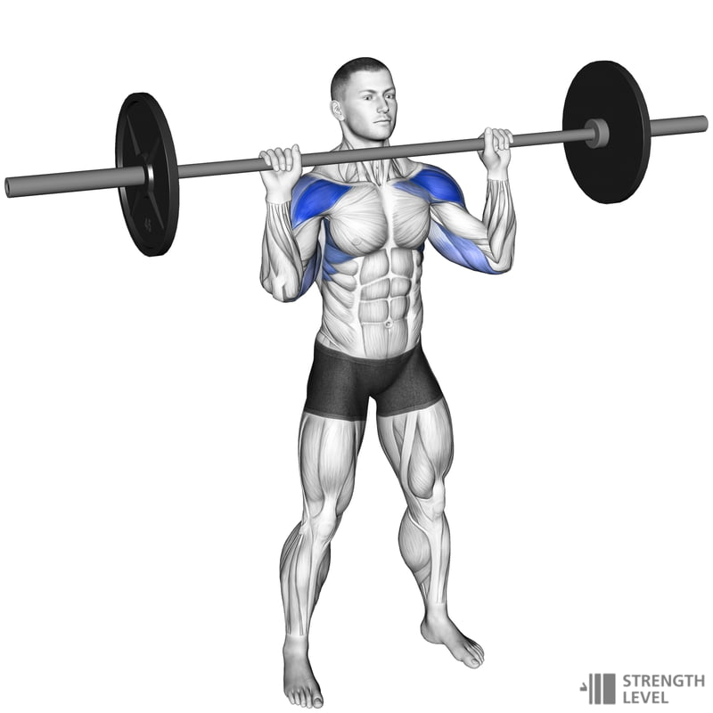

OHP (Overhead Press)

Opis ćwiczenia:
OHP to jedno z podstawowych ćwiczeń na barki, które angażuje całą obręcz barkową oraz mięśnie stabilizujące.
Technika:
- Stój prosto, trzymaj sztangę na wysokości klatki piersiowej.
- Wypchnij sztangę nad głowę, prostując ręce.
- Powoli opuść sztangę do pozycji startowej.
Angażowane mięśnie:
- Mięśnie naramienne (przednia i boczna część)
- Mięśnie trójgłowe ramienia
- Mięśnie czworoboczne
Lateral Raises na bramie

Opis ćwiczenia:
Podnoszenie ramion na bramie to świetne ćwiczenie izolujące boczną część mięśni naramiennych.
Technika:
- Stań bokiem do wyciągu i chwyć uchwyt.
- Unieś ramię na bok do wysokości barku.
- Powoli opuść ramię do pozycji startowej.
Angażowane mięśnie:
- Boczna część mięśnia naramiennego
- Mięśnie czworoboczne
Przyciąganie warkocza

Opis ćwiczenia:
Przyciąganie liny (tzw. warkocza) na wyciągu to doskonałe ćwiczenie na tylne aktony barków.
Technika:
- Chwyć linę nachwytem i stań stabilnie.
- Przyciągnij linę do twarzy, rozkładając ręce na boki.
- Powoli wróć do pozycji wyjściowej.
Angażowane mięśnie:
- Tylna część mięśni naramiennych
- Mięśnie czworoboczne
- Mięśnie rotatory barków
Dipy

Opis ćwiczenia:
Dipy to świetne ćwiczenie angażujące przednie aktony barków oraz tricepsy. Można je wykonywać z dodatkowym obciążeniem.
Technika:
- Ustaw się na poręczach, chwyć je stabilnie.
- Powoli opuść ciało, aż ramiona osiągną kąt 90 stopni.
- Dynamicznie wyprostuj ręce, wracając do pozycji startowej.
Angażowane mięśnie:
- Przednia część mięśni naramiennych
- Mięśnie trójgłowe ramienia
- Mięśnie klatki piersiowej